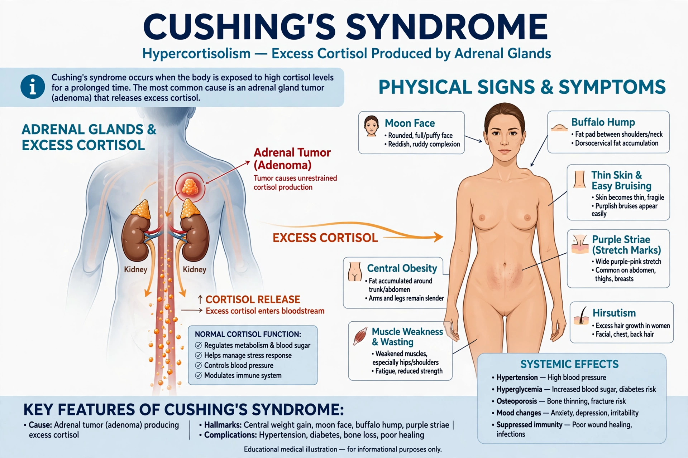

Cushing's syndrome is a collection of signs and symptoms due to prolonged exposure to high levels of the hormone cortisol. The commonest cause is use of glucocorticoid medicines such as prednisone; endogenous causes include a pituitary adenoma (Cushing's disease), adrenal tumors, and ectopic ACTH production.

Features include rapid weight gain in the face and trunk, thinning skin, easy bruising, muscle weakness, osteoporosis, high blood pressure and glucose intolerance.
Diagnosis confirms hypercortisolism, then locates its source. Treatment is usually surgery to remove the responsible tumor, or tapering steroid medication when that is the cause.
American neurosurgeon Harvey Cushing described the syndrome in 1932. It is the mirror image of cortisol deficiency in Addison's disease.